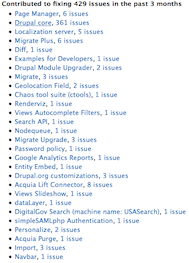
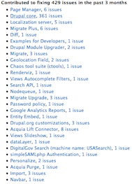

Who am I?
Matt Parker, mparker17 pretty much everywhere
WSC: part of Environment Canada that monitors, stores, and disseminates water level, streamflow and sediment flow data for various lakes and rivers around Canada.
Versabanq is a subsidiary of the Pacific and Western Bank of Canada.
What do I know about contributing to Drupal?
6 years, 9 months on Drupal.org
I write the Drupal 8 Core Updates occasionally.
48 commit mentions in Drupal 8.0 core, 3 commit mentions in Drupal 7 core
I (co-)maintain 5 modules (plus a few sandbox projects).
244 commits to various modules, including Panopoly, Metatag, Examples, Environment Indicator, Search API Pages, Site Audit, and the Drupal.org theme Bluecheese.
6 people list me as a mentor on Drupal.org; I've trained/mentored ~32 co-op students in Drupal for my employers.
Other notable things
I never completed a degree — no formal education
I have 19 mentors listed on Drupal.org
I'm a bit dyslexic
... the point is, I'm not really all that special, and probably a lot like you.
Why get involved?
Some motivations for contributing to OSS :
You want to save yourself time in the future (i.e.: only spend effort fixing something once),
You want to help others in the same situation,
You got all this stuff for free, and now it is paying your bills, and now you feel like you should do something in return,
You want to get your name out there (gain "community karma") to help you find work in the future,
You want feedback from others (e.g.: for security),
You want to be influential / a thought leader / establish an industry standard and gain competitive advantage / loyalty,
You want to make the world a better place, etc.
Whatever your motivation(s), keep Drupal's code of conduct in mind!
This is probably review: you wouldn't be listening to me talk if you didn't already know why you wanted to contribute to Drupal.
That being said, you'll have to interact with others in the community; understanding some of their reasons might make things easier.
Note that people contribute to open-source software for reasons which range from selfish to altruistic; many lie somewhere in between.
I'm not going to judge you by your motivations for contributing.
Whatever your reasons are, keep in mind that Drupal has a code of conduct, which says: (1) "be considerate", (2) "be respectful", (3) "be collaborative", (4) "when we disagree, consult others", (5) "when unsure, ask for help", and (6) "step down considerately".
How can I help?
You can still contribute to Drupal, even if you don't (or can't) code!
Examples:
Support others, encourage contribution, connect people,
Organize events or help with them,
Train people, provide support , give demos,
Documentation , translation (interface, documentation), case studies ,Help design Drupal's UI ,Triage issues, help plan work, contribute themes,
Manually test , improve test coverage,Help market Drupal , make a donation , vote in the community elections, write a case study, blog, etc.
drupal.org/contribute
I can't emphasize this enough: there is way more to contributing to Drupal than writing code.
Support others:
Come out to events like this one.
Knowing there are people interested in something I know about motivated me to actually get up here.
I don't generally like public speaking.
Encouraging to see the faces of my friends in the audience — feels like I'm talking to friends instead of complete strangers.
Encourage contribution:
If you are in a position of authority, contribute by encouraging your employees to contribute.
Example: Diana/MallDatabase: I wrote little patches/modules; did not think would be useful to others. Diana encouraged me to contribute, even though doing so took longer to get the results she wanted.
Connecting people:
It's easy for people working really hard on a problem to become siloed.
If you have a big address book, connecting other people can be incredibly helpful!
If you know of someone working on a problem that someone else could help with or has domain knowledge, introducing them to each-other will often result in a better result that gets done faster.
Example: Morgan Tocker: Works on MySQL team. When I heard about the next generation testbot initiative, I put the testbot maintainers in touch with him.
Events:
Organizing or volunteering at meetups, camps, conferences, etc., like this one.
Recording video is helpful: makes that talk available to others in the future.
Example: Chris Luckhardt: Worked with Drupal for 8(?) years, no patch in core yet, but through DUGTO meetups, DrupalCamps, DrupalNorth, the Drupal community in Toronto, Canada, and Japan has grown significantly.
Training/support/demos:
Helps them see it's power/potential/usefulness. Maybe make them interested in using / contributing more.
Shows that the Drupal community is friendly.
You learn 90% of what you teach to others; therefore helps you understand it better.
Example: Brian Lewis/Modules Unraveled podcast: started it to help him know which modules to use; it's now his career.
Documentation:
If you are good at writing or editing.
I often struggle to write good documentation as a developer.
Great to have reviewers to suggest better wording, organization, point out mistakes.
The Drupal community thinks documentation is so important that it has its own Documentation Maintainer (Jennifer Hodgdon).
Translation:
If you can speak other languages, suggest or vote on translations at localize.drupal.org.
Voting: to combat spammers and ensure we get the best translation, people can suggest different translations for the same string, and other speakers of the language vote on the best translation.
Voting is really simple and easy even if you don't have a background in translation.
Almost all Drupal documentation is in English: translating documentation, or blogging in your language really helps others who don't speak English as well as you do.
Case studies:
Write a case study for a recent project and have it published to Drupal.org
Great way to show off your work, business.
Design/UX:
If you are a designer, or know anything about usability, Drupal core and many contributed modules could really use your input!
Good way to start: if you see something that looks bad or is hard to use, file an issue, and suggest an alternative (along with your reasoning)!
Triage/planning:
If you are good at managing, prioritizing, and planning work.
Many contrib modules would love help managing their workload.
Example: xjm for Drupal core
Example: Rules, other big contrib projects.
At a higher level, the Drupal Association helps plan Drupal's long-term roadmap:
Identify market trends, plan how to meet them.
Identify barriers to contribution, plan how to fix them.
Testing:
If you are good at breaking things, manual test.
If you are good at setting up test frameworks, testing infrastructure is constantly improving.
If you are good at writing tests, find something untested or marked with "needs tests" and add them.
Marketing/designing marketing materials:
Drupal Association has a Branding and Marketing Committee that could use your help:
promoting Drupal to the general public,
putting together fact sheets, posters, templates, and other resources,
Help people trying to sell Drupal to their bosses, sell Drupal services to others, etc.
Donation:
If you don't have the time to help yourself, donate to the Drupal Association or meetups/camps like this
DA helps pay for Drupal infrastructure, hosting, DrupalCons.
All donations ultimately contributes to Drupal's long-term success by empowering others.
When should I contribute?
Volunteering?
Volunteer when you have time.
Don't burn yourself out! If you run out of time/energy, that's okay: the community can (usually) pick up where you leave off.
At work?
Easier to sell boss/client on contributing bug fixes.
Developed something new?
Ask permission from your boss/client to contribute it.
Consider splitting some of the work on company time, some on your own time.
Show off your latest project by writing a case study !
Documentation on Convincing Senior Management to Give Back to Drupal is out there!
Volunteer: If you're working on something, it'll make it easier for others to understand and pick up from where you left off if: (a) you document what you're doing somewhere (issue queue, Googledoc, blog, etc.), and (b) if you upload your work thus far when you stop work.
Employer: There's no harm in asking your employer if they're willing to let you contribute on company time! Use some of the motivations from the previous slides!
If you developed something new, and your company / client paid you to do so, then you should ask their permission first. Otherwise, they might feel that you're taking something they paid money for and giving it to their competitors.
Some companies add clauses to their contracts to make it clear when the code they write could be contributed to the community. Some go as far as stating that all of the code they produce is a certain license.
Especially if you're new to contributing, doing some of the contribution work on your own time will help make yourself and your employer/client feel that less time is being wasted.
In my experience, the more contribution practice you get, the easier it gets to identify what can be contributed, and the more contribution time you can bill.
Attributing your contributions
If you happen to be using the issue queue, Drupal.org has a feature to let you attribute your contributions so you can give yourself / your employer / your client credit. There is now even a list of organizations ranked by number of contributions!
Not all of your contributions will be through the issue queue, but if you happen to be using it...
This also provides more incentive for your employer and/or client: they get credit in the issue, on their organization page, and soon, in the commit message.
I suggest using the attribution features often! Tell others know if you're volunteering your time, and check whether others are volunteering before replying to them.
If you make a mistake, you can edit a comment and change how it's attributed.
Where do I contribute?
Drupal.org or one of its sub-sites:
drupal.stackexchange.com — support questionsOn IRC (#drupal-contribute, #drupal-design, etc.) — chat rooms for people working with / contributing to Drupal.IRL (at events like this, networking, BoF s, sprints, etc.)
The Drupal.org issue queues are where specific code and design tasks end up:
Issue queues are like Jira, or Redmine, or Bugzilla, etc.
Used to report bugs and manage tasks, new features, and certain types of support requests.
Generally, they track specific tasks; higher-level planning is often done on groups.drupal.org or through conversations in IRC.
Drupal core, each module, theme, installation profile has own issue queue.
Also queues for Drupal.org itself, and its sub-sites, and all its hosting/testing infrastructure; and for certain initiatives/projects, etc.
Drupal.org also has a lot of high-level documentation which you can edit if you have the community role.
General discussions, including high-level design work, planning, and marketing, are usually done on groups.drupal.org.
If you're interested in specific things (like the Drupal UI, continuous integration, or Docker containers), there's probably an interest group on groups.drupal.org for you, where you can ask for support and share knowledge with other people interested in the same thing.
If you're looking to help with translation, you can submit translations and vote on other people's translations at localize.drupal.org.
If you want to donate, or elect our next Drupal Association director, you can do so on association.drupal.org.
Note that for the community elections specifically, you only have to have logged into drupal.org at least once in the year before the election was called.
Barriers
But I'm not experienced / smart enough / qualified to help!
You're just as smart / qualified as the rest of us!
Hard for experienced people to identify UX /DX problems!
But I don't know where to start!
Lots of tools/programs to help (mentoring , novice tag
Ask in #drupal-contribute (IRC)!
But I don't have enough time!
Maybe your employer does!
Some contributions are quick.
You'll get faster with practice.
But I don't have the "confirmed" role
Talk to me afterwards (or anyone with community role).
Experience:
If you care enough to contribute, then you're as qualified as the rest of us!
Remember everyone starts out inexperienced.
Example: webchick: started out as a Google Summer of Code student in university
People buried deep in a problem get siloed, or lose sight of the big picture, or forget Drupal needs to be easy for people with no experience to use
So having people around with less experience or a different perspective is VERY useful.
Where to start:
We add the novice tag to issues we think will be easy.
Every Wednesday, a bunch of community volunteers run Core contribution mentoring sessions in IRC.
Often mentors at code sprints and Drupal events.
Many people will be happy to mentor you if you ask! Just remember, they're volunteering too!
#drupal-contribute is all about contributing.
Go there and say "I want to contribute to Drupal but I've never done it before! I'm good at x ... Is anyone able to help me?"
Guaranteed someone will answer!
Feel shy? Ping me directly, mparker17.
Time:
Convince your employer that contributing case studies, patches, etc. will:
get them more business,
recognition,
thought leadership in the community,
save them time / money in the future
It's worth asking to see if you can turn your volunteer time into billable time!
Not all contributions need to take a lot of time!
Support questions you know the answer to: only a few minutes to answer
Good at code review? Try reviewing small patches, and/or documentation patches.
Issue needing manual testing, or bug needs to be reproduced? If steps are clearly defined, go for it!
Read through the Drupal 8 core commit log!
Doesn't help the community right away, but your awareness will make it easier and faster for you to contribute in the future!
Might also help you when you start working with Drupal 8.
Example: me / D8 Core Updates:
I was already reading through commits, loved the TWiDC posts at the time.
Went to DrupalCamp Ottawa, met webchick, overheard her saying she had been stressing out over finishing the last one before coming to DrupalCamp Ottawa.
I volunteered.
Now I spend ~5m each day, adding interesting commits and blog post links to the draft document.
Have a unique use case? Answer questions about it, blog, post about it to relevant Drupal Groups!
Bring up something others haven't considered.
Others might suggest things that will save you time!
Demonstrating that you have a real use case can affect the solution that people choose.
Suggestion: make sure it's relevant to where you're posting to.
Remember that a lot of us are volunteers: we understand that and try to keep the time / difficulty barrier-to-entry low.
Confirmed role:
To reduce the damage a spammer could do, you need the "confirmed" role so that:
Your user profile is shown publicly
There's no restriction on how often you can comment in a certain period of time,
You can add and edit a bunch of different types of content on the drupal.org site (docs pages, case studies, organizations, etc.),
You can use contact forms,
The confirmed role has to be added to your account manually by anyone with the "community" role, including myself
The "community" role is given after a certain amount of time or participation,
If you want the "confirmed" role, or you want me to check whether you have the "confirmed" role, come find me afterwards!

 
